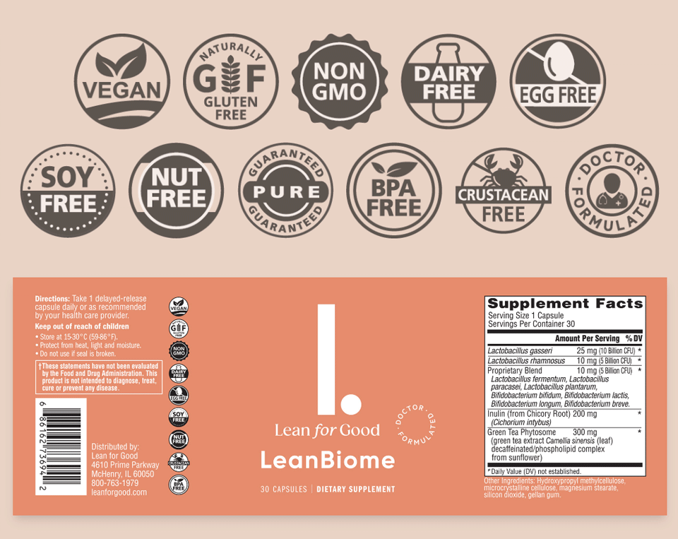
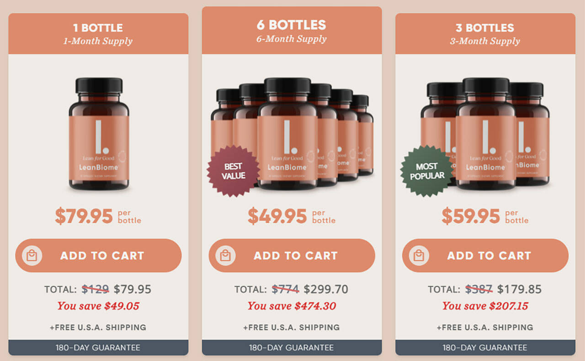

LeanBiome Reviews -
Does It Really Work? Know This Before Buy!
LeanBiome is a weight loss supplement made by Lean for Good. Available exclusively online through LeanLifeNow.com, LeanBiome uses prebiotics, probiotics, and green tea extract to help you lose a significant amount of weight in a short period of time. Does LeanBiome live up to the hype? How does LeanBiome work? Keep reading to discover everything you need to know about this new diet pill.
What is LeanBiome?
LeanBiome is a nutritional supplement from Lean for Good that helps you lose weight and keep it off. The diet pill was created by a doctor. It’s a doctor formulated supplement with probiotics, prebiotics, green tea extract, and natural ingredients to help support good digestion, making it easier to lose weight.
How Does LeanBiome Work?
LeanBiome uses a blend of three types of natural ingredients to help you lose weight,
including prebiotics, probiotics, and green tea extract.
Together, these ingredients can activate your fat burning switch,
making it easy to lose weight regardless of how much you’re dieting or exercising.
Lean for Good, the creators of LeanBiome, claim weight loss is unrelated to dieting or will power.
Even if you’re doing everything right, you may not be able to lose weight.
Instead, according to Lean for Good, the root cause of weight loss is found in an organ in your body nicknamed “the swamp.”
The swamp can leave you tired and feeling decades older than you are. It can cause poor digestion and weight gain. It can leave you
By taking LeanBiome daily, you can enjoy a 17-second daily ritual to “drain the swamp” and restore health.
Lose Weight with LeanBiome“This is the best thing I’ve tried. I’ve lost 35 lbs!”
“I lost my job in 2020 so I had to start working from home and that put a lot of weight gain on me. I started looking for ways to lose weight. I tried different vegan pills, different shakes, I tried exercising, I tried many different things. And nothing worked. Until I tried LeanBiome. This is the best thing I’ve tried. I’ve lost 35lbs! I wake up with energy. I find myself wanting to clean, wanting to do things! I strongly recommend this to all my friends and family. I hope you give it a try and get the same results I got!”
LeanBiome Benefits
By taking LeanBiome daily, you can purportedly “drain the swamp” inside your body and enjoy the following benefits:
- Weight loss of up to 100lbs or more
- Supercharge energy
- Younger-looking skin
- Thicker, glossier hair
- Comfortable, more flexible joints
- Smoother digestion
- Happier mood
- Sharper mind and memory
Overall, LeanBiome claims to give you a newfound sense of confidence in every area of your life. By taking one capsule of LeanBiome daily, you can solve virtually every problem you face, making it easy to lose weight, keep it off, and enjoy a new life.
LeanBiome Ingredients
LeanBiome contains 11 active ingredients, including green tea extract, inulin, and 9 probiotic strains. Each ingredient tackles weight loss in a different way.
Here’s how each of the three active ingredient types in LeanBiome helps you lose weight:
Probiotics: LeanBiome contains significant doses of probiotic strains like lactobacillus gasseri and lactobacillus rhamnosus.
These probiotics thrive in your digestive tract, where they help break down the foods you eat, support good immune health,
and make it easier to lose weight. Bad gut health makes it difficult to lose weight. It also makes you feel sluggish and weak.
By taking a probiotic supplement like LeanBiome, you can support gut health and probiotic levels in your gut,
making it easier to lose weight and support overall health. LeanBiome contains 20 billion colony forming units (CFUs) of probiotics in a time-delayed capsule,
making it easier for the active ingredients to reach your digestive tract and thrive.
Prebiotics: LeanBiome contains a single prebiotic: inulin from chicory root. It’s one of the most popular prebiotic sources available today.
Inulin is a natural plant extract that fuels the good bacteria (the probiotics) in your digestive tract.
95% of Americans don’t get their daily recommended intake of fiber, which means you’re driving your gut bacteria of valuable nutrients.
LeanBiome contains a significant dose (200mg) of inulin to feed your gut bacteria and support good overall health.
Green Tea Extract: LeanBiome contains a specific type of green tea extract called Greenselect Phytosome.
That green tea extract is rich with epigallocatechin gallate (EGCG), a natural chemical with antioxidant effects.
Studies show that the EGCG is green tea extract can provide significant weight loss benefits. Green tea extract is also rich with caffeine and L-theanine,
two other ingredients linked to weight loss and overall health. By taking the green tea extract in LeanBiome daily,
you can support good diet and exercise habits while making it easier to lose weight.
Together, these three types of ingredients in LeanBiome make it easier to lose weight by supporting your gut from the inside out.
While other diet pills flood your body with stimulants or weird herbal extracts, LeanBiome focuses on supporting good digestive health and building outward from there.
Lose Weight with LeanBiome“I’ve lost 36lbs. LeanBiome changed my life!”
“I lost 35lbs! I was a size 13 in jeans, and I’m going to be a 7. That’s why I’m so excited! I did lose a lot of weight! I gained so much confidence, my energy is up. I’m wearing dresses now. I had like a year and a half that I stopped wearing dresses and now I’m ok wearing dresses! My confidence is up. Now I sleep good and my life is better. My husband is happy, everyone’s happy! All my family see it’s a different me, so that’s why I truly recommend it.
How Much Weight Can You Lose with LeanBiome?
The makers of LeanBiome claim thousands of people are already losing weight with LeanBiome, enjoying “rapid and sustained fat loss” just by taking one capsule of LeanBiome daily.
In fact, Lean for Good claims you can lose weight with the formula even without eating right or exercising. The company insists you can continue eating all your favorite foods, for example, while still enjoying rapid and sustained weight loss.
Here are some of the weight loss claims found on LeanLifeNow.com:
At LeanLifeNow.com, you’ll discover the story of Megan C, who lost 240lbs in 17 months by activating her fat burning switch using the ingredients in LeanBiome.
Lean for Good cites a study where patients taking one ingredient in LeanBiome lost 8.5% of their belly fat in 12 weeks. According to Lean for Good, that means the average American woman weighing 170lbs would lose 15lbs of belly fat in just 3 months “doing nothing else” while taking LeanBiome.
In a separate study on lactobacillus rhamnosus, a group lost an average of 9.7lbs of fat in 12 weeks.
Another study found lactobacillus fermentum led to a 3% drop in body fat in just 43 days compared to just 1% for the placebo group, or triple the fat loss in 6 weeks.
In a study on Greenselect Phytosome, participants lost 30lbs in 12 weeks while following a calorie-restricted diet. A group following the same diet without the green tea extract only lost 11lbs.
Overall, Lean for Good seems confident LeanBiome can lead to significant, rapid, and sustained weight loss results in a short period of time regardless of your diet and exercise habits.
LeanBiome Ingredients Label
Lean for Good, the makers of LeanBiome, disclose all ingredients and dosages in LeanBiome upfront, making it easy to compare the supplement to other formulas sold online today. Here are all of the ingredients and dosages within each capsule of LeanBiome:
- 10 billion CFU of lactobacillus gasseri
- 5 billion CFU of Lactobacillus rhamnosus
- 5 billion CFU of a proprietary blend with lactobacillus fermentum, lactobacillus paracasei, lactobacillus plantarum, Bifidobacterium bifidum, Bifidobacterium lactis, Bifidobacterium longum, and Bifidobacterium breve
- 200mg of inulin (from chicory root)
- 300mg of Greenselect Phytosome (green tea extract)
- Other (inactive) ingredients, including vegetable cellulose (to create the capsule), microcrystalline cellulose, magnesium stearate, silicon dioxide, and gellan gum
Each capsule is a delayed-release capsule, which means it’s designed to survive your stomach acid before dispensing its active ingredients in your gut – similar to how other probiotic formulas work. LeanBiome is free of GMOs, BPAs, sugar, gluten, nuts, soy, crustaceans, and dairy. It’s also “guaranteed pure,” according to Lean for Good.
Lose Weight with LeanBiome“Down 62lbs. Amazing. I have my life back!”
“I was overweight, I had a belly, and I didn’t think there was any hope for me. I did Weight Watchers, Lean Cuisine, Atkins, but nothing seemed to be able to shed the pounds. Since I’ve been using LeanBiome I’m down 62lbs, which is amazing! This has shown me how easy it is to lose weight. I also witnessed better sleep, better digestion. I feel more energized and I am a happy camper! I truly believe in this product and I think you should too, because honestly, it’s worked for me. LeanBiome has given me the opportunity to basically get my life back!”
LeanBiome Pricing
LeanBiome is priced at $49.95 to $79.95 per bottle, depending on how many bottles you order. The more bottles you order, the more you save.
Here’s how pricing breaks down when ordered through LeanLifeNow.com:
- 1 Bottle: $79.95 + Free US Shipping
- 3 Bottles: $179.85 + Free US Shipping
- 6 Bottles: $299.70 + Free US Shipping
- Each bottle contains 30 capsules (30 servings).
You take one capsule per day for weight loss.
Buy NowLeanBiome Refund Policy
LeanBiome is backed by a 180 day (6 month) moneyback guarantee. You can request a complete refund on your purchase (including shipping costs), if you contact LeanBiome within 180 days of your original purchase date.
To qualify for the refund, you must return any remaining, unopened bottles to the company’s returns address. Once the company receives the bottles (if there are any remaining from your order), you will receive a full refund.
Returns Address: 1301 Ridgeview Drive, McHenry, IL 60050
Lose Weight with LeanBiome“Lost 38 lbs! It’s really helped with my sugar cravings”
“I’ve lost 38 pounds. And it’s really helped me with my sugar cravings. I would say I probably have more energy throughout the day as well, and I am able to sleep better. This product has really helped me tremendously. It’s given me confidence and I feel more in control. I feel much happier and I’m more hopeful for the future. I feel like I can continue losing more weight. This product is amazing!”
About Lean for Good
Lean for Good is a nutritional supplement company based in McHenry, Illinois. LeanBiome is marketed as a doctor formulated supplement, which means a doctor (typically, a medical doctor working for Lean for Good) created LeanBiome specifically for weight loss and digestion.
You can contact Lean for Good via the following:
- Email: support@leanforgood.com
- Phone: 800-763-1979
- Mailing Address: 4610 Prime Parkway, McHenry, IL 60050
LeanBiome is exclusively available through Lean for Good, and you can only buy it through LeanLifeNow.com. It’s not available through any other retailers online or offline.
Final Word
LeanBiome is a doctor-formulated weight loss supplement created by Lean for Good. The supplement uses probiotics, prebiotics, and green tea extract to help anyone lose weight.
According to the official website, one woman lost 240lbs in 17 months by activating her weight loss switch using the ingredients in LeanBiome.
Today, anyone can enjoy similar benefits with the LeanBiome formula.
To learn more about LeanBiome and how it works, or to order the supplement today, visit the official website. LeanBiome is priced at around $80 per bottle and backed by a 180 day moneyback guarantee.